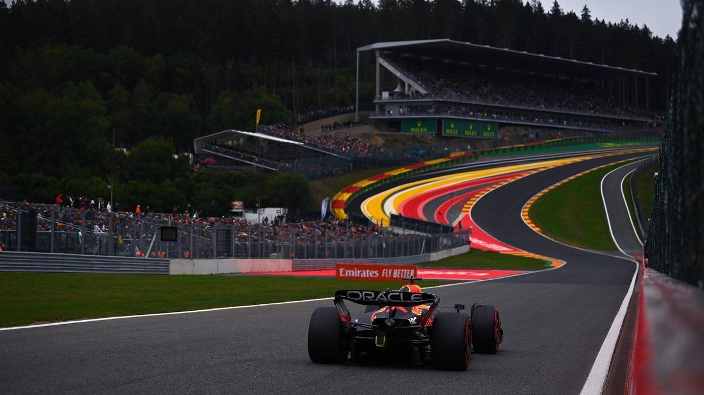
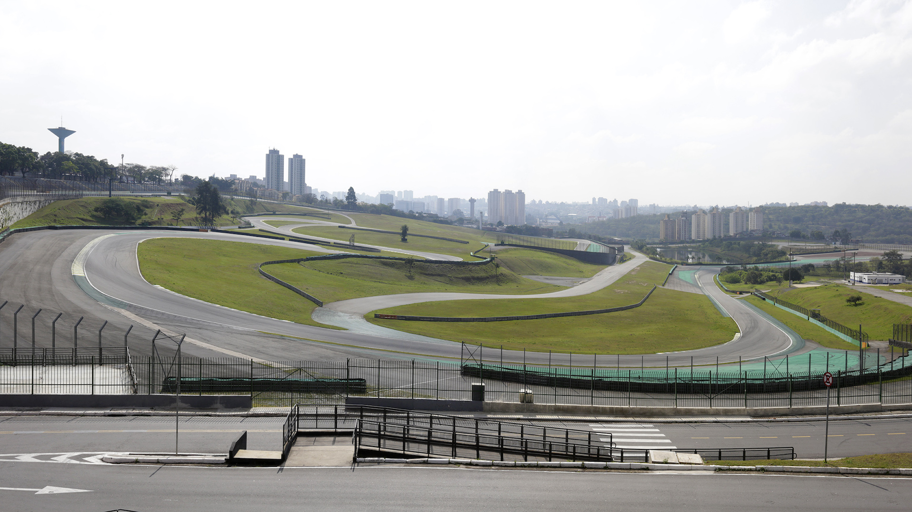

Listado de Circuitos
| Nombre | Ubicación | Longitud | Vueltas | Imagen |
|---|---|---|---|---|
| Monza | Italia | 5.793 km | 53 |  |
| Spa-Francorchamps | Bélgica | 7.004 km | 44 |  |
| Silverstone | Reino Unido | 5.891 km | 52 |  |
| Marina Bay | Singapur | 5.063 km | 61 |  |
| Interlagos | Brasil | 4.309 km | 71 |  |